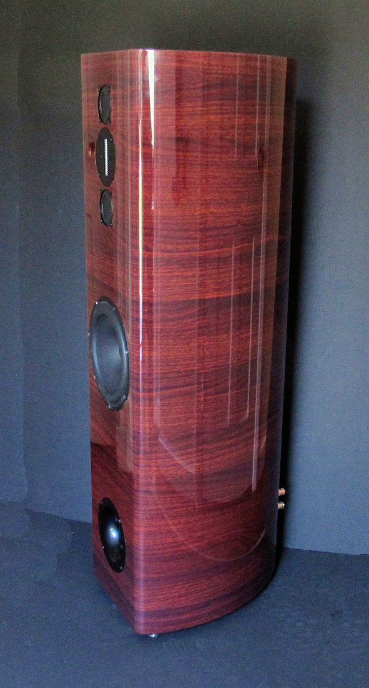

The BMR Tower

Although our BMR monitor provides exemplary bass extension down to 34 Hz, true full range performance requires a larger cabinet and a larger woofer. Working with Paul Kittinger, who is an expert in transmission line design, we have developed a mass-loaded transmission line cabinet that utilizes the same 8-inch Scan Speak Revelator woofer that performed so well in the Philharmonic Model 3. In our opinion, the Revelator woofer is the finest available in this size class and provides flat in-room response to 25 Hz with absolutely no port noise. Useful response extends to 20 Hz, which you can test for yourself using our demonstration tracks. Detailed specifications for the Revelator woofer arehere.In addition, the use of two BMR midrange units in an MTM configuration further improves power handling and provides increased clarity in the lower treble and upper midrange. The Absolute Sound magazine named the Towers "Best Bargain" at the 2021 Capital Audiofest and had this to say about their performance and aesthetics,
|
“
The speakers fared extremely well on both large-scale orchestral and chamber music. On the basis of sonics alone, the speakers are a bargain; add in the exquisite carpentry and finish and they become an incredible bargain.
”
|
|
“
With an almost totally neutral response out to such a wide angle, those who want accurate sound reproduction do receive it in these speakers. They add nothing nor do they subtract anything from what is in the original recording ... the BMR Towers could easily be used as studio monitors for any sound engineer who wants to know the truth of their recording.
”
Audioholics Review, November 3, 2021 |
To order any of the tower models, just email Dennis at info@philharmonicaudio.com. The BMR Towers are available in rosewood or natural walnut for $3,900/pair plus shipping, and a premium ebony finish for $4,200/pair plus shipping. Depending on how far you are from Washington, D.C., shipping for the towers will range from $250/pair to $300/pair.
Measurements
(On Axis and Off Axis Horizontally, One Meter Anechoic)
On Axis

20 Degrees Off Axis

45 Degrees Off Axis

70 Degrees Off Axis

90 Degrees Off Axis

Woofer and Port Combined Nearfield

Impedance

Specifications
| Cabinet | Mirror Rosewood, Mirror Black, Mirror Ebony, or Natural Walnut |
| Tweeter | RAAL 64-10X OEM |
| Midrange | Balanced Mode Radiator 2.5" |
| Woofer | ScanSpeak Revelator 8" |
| Frequency Response | 25 Hz - 20kHz (+ 1.5 / - 3db) Anechoic |
| Sensitivity | 86 dB (2.83v/1M) |
| Box Alignment | Mass Loaded Transmission Line |
| Dimensions | 44" H x 12" W x 15-1/2" D |
| Weight | 72 lbs |
| Impedance | 6 Ohms |
| Crossover | Linkwitz-Riley 2nd Order Acoustic at 850 Hz, Linkwitz-Riley 4th Order Acoustic at 3,800 Hz |